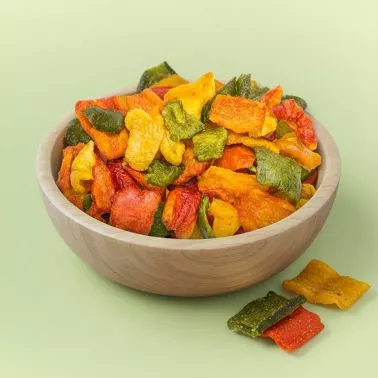
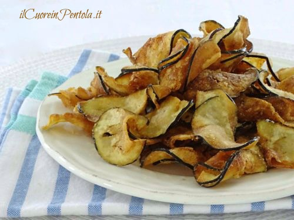
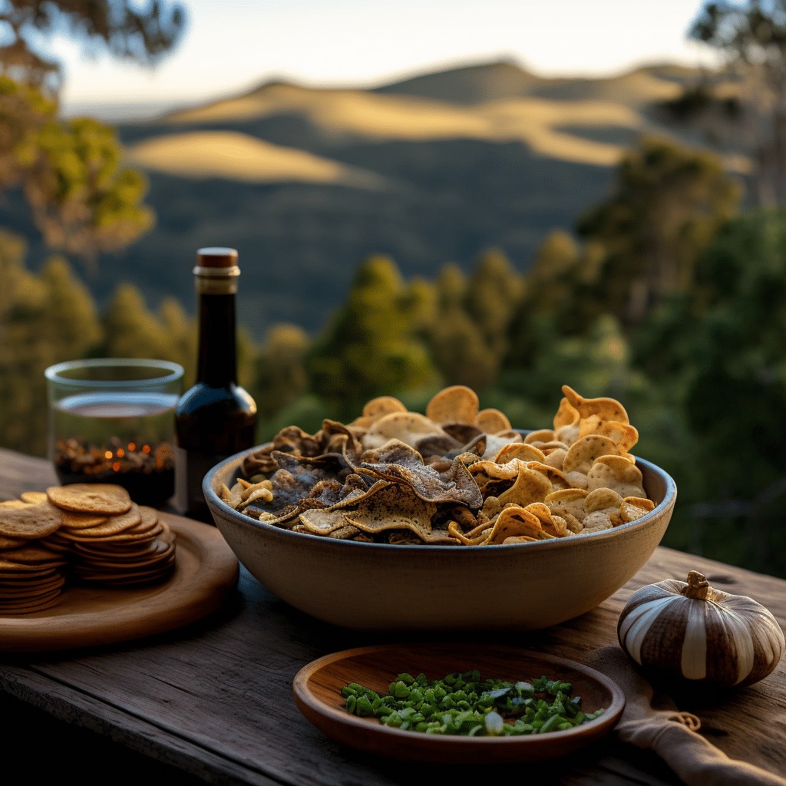
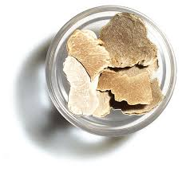
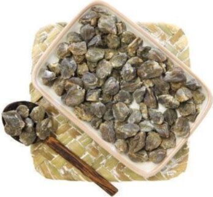
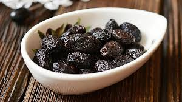
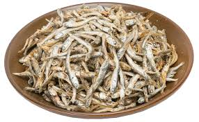
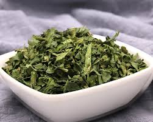
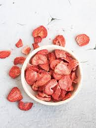

Formaggi
Tostati lentamente fino alla croccantezza perfetta
 Best Seller
Forno
Best Seller
Forno
Chips di Grana Padano
Grana Padano selezionato, tostato lentamente in forno ventilato. Croccantezza intensa, sapore deciso. Il topping che trasforma una pizza normale in qualcosa di memorabile.
 Artigianale
Forno
Artigianale
Forno
Chips di Pecorino
Pecorino stagionato selezionato, tostato a bassa temperatura. Sapore più rustico e deciso rispetto al grana, perfetto per pizze bianche e focacce.
Verdure & Ortaggi
Essiccate a bassa temperatura per preservare gusto e colore
 Universale
Essiccazione
Universale
Essiccazione
Chips di Cipolla Dorata
Cipolla dorata tagliata sottile ed essiccata lentamente. Dolce, croccante, versatile. L'ingrediente che ogni pizzeria dovrebbe sempre avere.
 Essiccazione
Essiccazione
Chips di Carota
Carote fresche tagliate a rondelle e disidratate. Colore vivace, leggermente dolci, ottime come topping cromatico o ingrediente in antipasti.
 Stagionale
Essiccazione
Stagionale
Essiccazione
Chips di Zucchina
Zucchine estive tagliate sottili ed essiccate. Leggere e delicate, ideali come topping per pizze bianche e insalate calde.

EssiccazioneChips di Peperone
Peperoni rossi e gialli essiccati a fette. Dolci e colorati, aggiungono vivacità visiva e sapore mediterraneo a qualsiasi piatto.

EssiccazioneChips di Melanzana
Melanzane violette essiccate in fette sottili. Sapore intenso e terroso, texture croccante. Perfette su pizze alla parmigiana o come snack da aperitivo.
 Aromatico
Essiccazione
Aromatico
Essiccazione
Basilico Essiccato Chips
Basilico fresco essiccato in foglie intere a bassissima temperatura. Aroma intenso e persistente, nettamente superiore al basilico secco industriale.
Funghi & Tartufi
Il massimo della foresta, in vaschetta
 Premium
Essiccazione
Premium
Essiccazione
Chips di Porcini
Funghi porcini selezionati, essiccati a bassa temperatura. Aroma boschivo intenso e croccantezza sorprendente. Il topping premium per eccellenza.
Chips di Finferli
Finferli (cantarelli) essiccati, dal sapore delicato e fruttato. Colore dorato naturale, ottimi su risotti e pizze bianche con fonduta.

EssiccazioneChips di Champignon
Champignon freschi essiccati a fette. Neutri e versatili, si abbinano a qualsiasi pizza o piatto. Il fungo da avere sempre in magazzino.

Lusso EssiccazioneChips di Tartufo
Tartufo nero selezionato, affettato e essiccato. Aroma potente e persistente. Un tocco di lusso accessibile per il menù della tua pizzeria.
Ingredienti Premium
Nicchie di mercato ad alto valore aggiunto
 Trend 2025
Tostatura
Trend 2025
Tostatura
Granella di Pistacchio
Pistacchi tostati e granellati finemente. Il topping del momento su pizze, burrate e dessert. Richiestissimo, versatile, ad altissimo margine percepito.
 Sud Italia
Essiccazione
Sud Italia
Essiccazione
Pomodoro Rosso Confit
Nduja calabrese essiccata e ridotta in polvere fine. Piccante, aromatica, concentrata. Aromatizza impasti, condimenti e salse in modo unico.

EssiccazioneCapperi Essiccati
Capperi di qualità essiccati e leggermente croccanti. Mantengono il sapore sapido e intenso tipico del cappero siciliano, senza la necessità di dissalarli.

EssiccazioneOlive Essiccate Chips
Olive nere essiccate in fette croccanti. Sapore concentrato e intenso, ottimo su pizze, bruschette e antipasti mediterranei.

Umami EssiccazioneAcciughe Essiccate
Filetti di acciuga essiccati e croccanti. Concentrato di sapore umami, perfetti come topping salato su pizze, focacce e antipasti.
 Novità
Confit
Novità
Confit
Pomodoro Giallo Confit
Varietà gialla lavorata in confit a bassa temperatura. Delicata, fruttata, perfetta su pizze bianche e carpacci gourmet.
Liofilizzati
Tecnologia avanzata per preservare colore, aroma e nutrienti
Liofilizzato
Liofilizzazione
Rucola Liofilizzata
Colore verde brillante, aroma pungente intatto. La liofilizzazione preserva tutto ciò che la semplice essiccazione non riesce a mantenere. Garnish perfetto.

Liofilizzato LiofilizzazioneSpinaci Liofilizzati
Spinaci liofilizzati in foglie croccanti. Struttura superiore rispetto all'essiccazione, colore vivace, sapore fresco. Ideali per pizze vegetariane premium.

Dessert Pizza LiofilizzazioneFragole Liofilizzate
Fragole liofilizzate croccantissime. Dolci, acide, intense. Il topping ideale per dessert pizza, mascarpone e creazioni dolci gourmet.